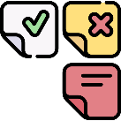
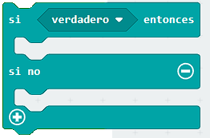
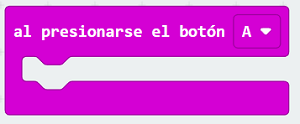
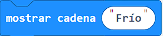
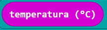
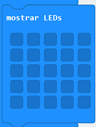
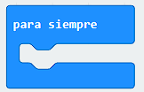
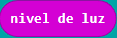

Para practicar
Actividades
A continuación encontrarás actividades que te permitirán practicar con los conceptos de estructuras de control de selección y operadores de comparación. Puedes realizar las actividades las veces que consideres necesario.
Pregunta de Elección Múltiple
En el siguiente ejemplo queremos que SI la temperatura es mayor a 26° nos muestre la cadena "calor"
¿Qué bloque cambiarías para que SI la temperatura es menor a 10° nos muestre la cadena "frío"?
¿Está frío?
Para practicar todo lo que aprendiste en este recurso te propongo hacer el siguiente programa.
Queremos saber que ropa ponernos para ir al liceo.
Realiza un programa para que al presionar un botón en la placa micro:bit se muestre la cadena "Frío" SI la temperatura es menor a 15° , sino se debe mostrar la cadena templado.
Algunos bloques que puedes utilizar:
 

¿Día o noche?
Ahora queremos saber si es de día o de noche para que la luz del jardín se prenda.
Realiza un programa para por siempre en la placa micro:bit se muestre un sol SI el nivel de luz es mayor a 15° , sino se debe mostrar una luna.
Algunos bloques que puedes utilizar:
 